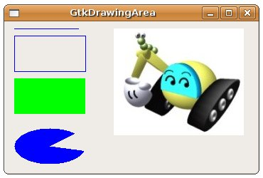

GtkDrawingArea是一個用來進行繪圖的元件，繪圖的時候，是將之繪製在window成員上，在繪圖時要處理的事件有：
- realize：元件被初始時
- configure_event：元件尺寸改變時
- expose_event：元件需要重繪時
要在GtkDrawingArea上繪圖，完整的函式內容可以參考 Drawing Primitives，基本上每個繪圖函式都會有一個GdkGC引數，它主要包括了前景色、背景色、線寬等資訊，您從GtkDrawingArea的GtkStyle中可以取得對應的GdkGC資訊。
下面這個程式是個簡單的示範：
#include <gtk/gtk.h>
gboolean expose_event_callback(GtkWidget *widget,
GdkEventExpose *event,
gpointer data) {
GdkGC *gc = widget->style->fg_gc[GTK_WIDGET_STATE(widget)];
GdkDrawable *drawable = widget->window;
GdkColor color;
// 畫一條線
gdk_draw_line(drawable, gc, 10, 10, 100, 10);
// 畫一個空心矩形
gdk_draw_rectangle(drawable, gc, FALSE, 10, 20, 100, 50);
color.green = 65535;
color.blue = 0;
gdk_gc_set_rgb_fg_color(gc, &color);
// 畫一個實心矩形
gdk_draw_rectangle(drawable, gc, TRUE, 10, 80, 100, 50);
color.green = 0;
color.blue = 65535;
gdk_gc_set_rgb_fg_color(gc, &color);
// 畫一個扇形
gdk_draw_arc(drawable, gc, TRUE,
10, 150, 100, 50, 45 * 64, 300 * 64);
// 畫一張圖
gdk_draw_pixbuf(drawable, gc, gdk_pixbuf_new_from_file("caterpillar.jpg", NULL)
, 0, 0, 150, 10, -1, -1,
GDK_RGB_DITHER_NORMAL, 0, 0);
return TRUE;
}
int main(int argc, char *argv[]) {
GtkWidget *window;
GtkWidget *drawing_area;
gtk_init(&argc, &argv);
window = gtk_window_new(GTK_WINDOW_TOPLEVEL);
gtk_window_set_title(GTK_WINDOW(window), "GtkDrawingArea");
drawing_area = gtk_drawing_area_new();
gtk_widget_set_size_request(drawing_area, 350, 200);
g_signal_connect(GTK_OBJECT(drawing_area), "expose_event",
G_CALLBACK(expose_event_callback), NULL);
gtk_container_add(GTK_CONTAINER(window), drawing_area);
g_signal_connect(GTK_OBJECT(window), "destroy",
G_CALLBACK(gtk_main_quit), NULL);
gtk_widget_show_all(window);
gtk_main();
return 0;
}
執行結果如下：

|
|